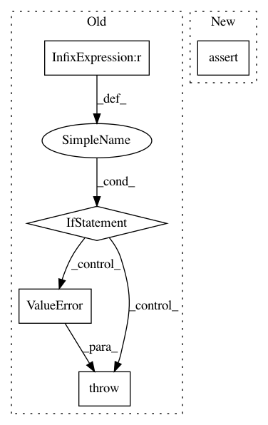

af461df627ef660d1a71b6981dedb4e4b504ba9a,txtgen/modules/connectors/connectors.py,StochasticConnector,_build,#StochasticConnector#Any#,256
Before Change
input_mu, input_log_var = inputs
output = sampler(input_mu, input_log_var)
elif len(inputs) == 3:
input_mu, input_log_var, context = inputs
sample = sampler(input_mu, input_log_var)
output = tf.concat([sample, context], axis=1)
else:
raise ValueError("Gaussian connector supports either "
"(mu, logvar) or (mu, logvar, context)")
else:
raise ValueError("Unsupported distribution")
After Change
output = inputs.sample()
try:
nest.assert_same_structure(inputs, self._decoder_state_size)
except (ValueError, TypeError):
flat_input = nest.flatten(inputs)
output = nest.pack_sequence_as(
self._decoder_state_size, flat_input)
In pattern: SUPERPATTERN
Frequency: 4
Non-data size: 5
Instances
Project Name: asyml/texar
Commit Name: af461df627ef660d1a71b6981dedb4e4b504ba9a
Time: 2017-09-25
Author: junxianh2@gmail.com
File Name: txtgen/modules/connectors/connectors.py
Class Name: StochasticConnector
Method Name: _build
Project Name: NifTK/NiftyNet
Commit Name: 9b6607902f7891e9233de88ffd8cc7a7aa6c89d0
Time: 2017-05-26
Author: wenqi.li@ucl.ac.uk
File Name: nn/preprocess.py
Class Name: HistNormaliser_bis
Method Name: normalise
Project Name: NifTK/NiftyNet
Commit Name: 01c3a882833dc5031df2f4440717870b35e4833a
Time: 2017-05-29
Author: wenqi.li@ucl.ac.uk
File Name: utilities/subject.py
Class Name: Subject
Method Name: column
Project Name: hanxiao/bert-as-service
Commit Name: ee4e2dc09190d33d818fe48cf04931f99d468949
Time: 2019-02-13
Author: hanhxiao@tencent.com
File Name: server/bert_serving/server/bert/modeling.py
Class Name:
Method Name: embedding_postprocessor